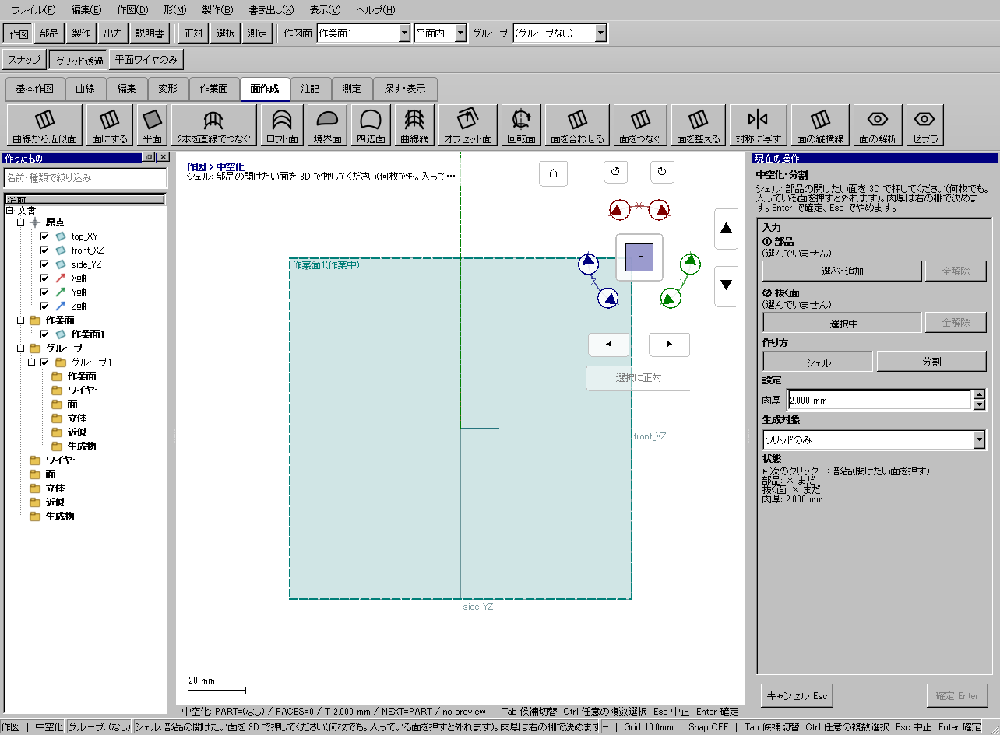
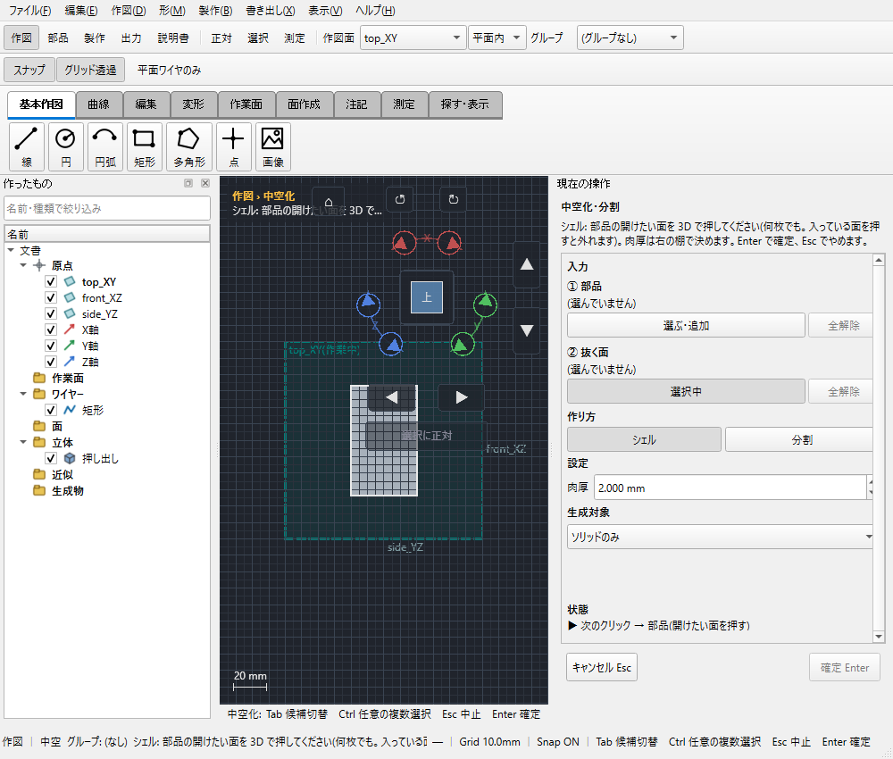

箱の上面を開けて肉厚1mmにする
使う機能：中空化（面を開けて厚みを残す）
指定した開口面を取り除き、残りの外形から内側へ肉厚を作ります。まず上面1枚の開口で試し、その後複数面へ広げます。
上が開いた、肉厚1mmの部品ができる。
1 準備 — 元の図形から作る
20×10×10mmの箱を作る。
まだ用意できていなければ、次の手順を先に行ってください。既にモデルがある場合も、例の座標・大きさ・面の向きを自分のモデルへ読み替えます。
- 20×10×10mmの箱を作る — 図形の作成から順に練習できます。
- 線・面・部品を取り違えずに選ぶ — 図形の作成から順に練習できます。
練習前にKCD2を別名保存します。数値の長さはmm、角度は度です。平面内のu/vと世界XYZを区別します。
2 使う道具を開く — 押す場所
- 部品 → 形状編集 → 中空化
別の入口：Ctrl+K → 中空化（面を開けて厚みを残す）を検索 → 候補の用途を確認して開きます。別モードなら「全モードから探す」をオンにします。

3 操作手順 — 一つずつ進める
箱を用意する
20×10×10mmの閉じた箱を作ります。等角表示で上面を見えるようにします。
画面で確認：屋根だけの面ではなく、閉じたソリッドです。
中空化を開く
部品 → 形状編集 → 中空化を選びます。①部品へ箱を入れます。
画面で確認：抜く面の欄とは別の役割です。
開口面を選ぶ
②抜く面のボタンを押し、上面を選びます。複数を抜く場合も、1枚ずつ強調を見て追加します。
画面で確認：上面だけを抜く例なら面数は1です。
肉厚を指定する
肉厚1mmにして下見を確認します。内面が底や側壁とぶつかっていないかを見ます。
画面で確認：上面が開いて、残りの面に肉厚がある形です。
確定する
Enterで確定し、上から内部を見ます。KCD2へ保存します。
画面で確認：結果が違えばUndoして抜く面を選び直します。
4 設定する欄と数値
ボタン名・欄名と、今回使う値を対応させてください。項目が出ていない場合は作り方・モードが合っているか確認し、ペイン内をスクロールします。
| 見る欄・役割 | この例の設定と意味 |
|---|---|
| 部品 | 20×10×10箱 |
| 取り除く面 | 上面 |
| 肉厚 | 1mm |
選択の確認：役割欄の名前と3Dの強調を照合します。重なって拾いにくい時はTabで候補を替えます。全体を使う例では左一覧の要素名を選び、3Dの1辺選択と区別します。

この実画面は既存操作試験の一場面で、下の数値例の完成画像とは限りません。設定・選択の操作画面。具体的な完成例は段階写真のある作業例を参照してください。
5 確定して結果を確認
必要な入力と数値をそろえ、下見と状態欄を確認して、右ペインの作成・適用・確定ボタンを押します。Enter対応の道具はEnterでも確定できます。
上が開いた、肉厚1mmの部品ができる。
形を作る操作では、元と結果の名前を分けて一覧で確認し、必要に応じて元を一時非表示にします。表示だけの機能では形状や要素数を変えることが目的ではありません。
6 取消・やり直し・保存
Escで未確定の入力を取り消します。道具を終えるには選択（V）か別の道具へ切り替えます。確定済みの図面変更はCtrl+Z、やり直しはCtrl+Yです。
モデルの編集正本はKCD2、説明書の編集正本はKCIです。外部へ出力するだけの機能では、出力ファイルと編集元を両方残してください。
進めない場合 — 症状から戻る場所を探す
| 起きていること | 確認して直す場所 |
|---|---|
| 底がなくなった | 開口面の強調を確認 |
| 肉厚が入らない | 最小寸法や局所曲率に対して厚すぎないか確認 |
この機能の入力条件：部品を1つ以上選んでください。
計算中は処理表示を見ます。失敗が出たら、対象・入力条件を変えずに何度も押すのでなく、案内にある対象と条件を確認します。
参考画面の出典と確認範囲
試験名：HP-SH-OUTPUT all output kinds themes preview undo and saved boundaries。試験全体の結果：passed。画像はコマンド呼出し直後で、入力待ち・下見の場合もあります。各段階の完成証拠ではありません。